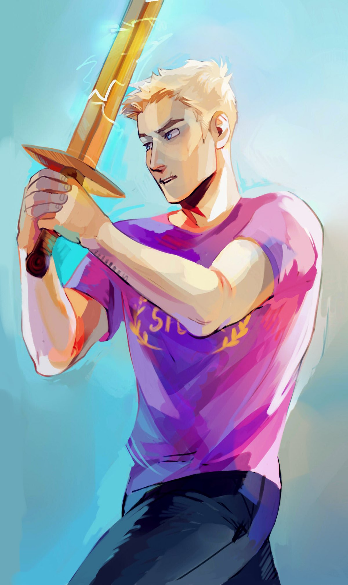

Wiki del Campamento Mestizo
Jason Grace
Jason Grace es uno de los principales protagonistas de Los héroes del Olimpo y uno de los siete héroes de la Profecía de los Siete. Es un semidiós romano hijo de Júpiter, la contraparte romana de Zeus, y hermano menor de Thalia Grace. Fue pretor del Campamento Júpiter hasta que le cedió voluntariamente su rango a Frank Zhang. Actualmente es el capitán de la Cabaña 1 en el Campamento Mestizo.
Historia
Jason nació el 1 de julio de 1994. Es hijo de Júpiter, dios de los cielos y rey del Olimpo, y la mortal Beryl Grace, una bella actriz quien se había sumido en el alcoholismo en años posteriores. Su nacimiento coincidió con el día sagrado de Juno. Después del nacimiento de su hermana mayor, Thalia, Zeus las abandonó a ambas (como es costumbre entre los dioses) y su madre se volvió aún más inestable. Cuando Thalia tenía unos siete años, Zeus regresó con su forma romana de Júpiter. Thalia señaló que Zeus en su forma romana era más paternal pero más severo hacia ella y hablaba casi siempre en latín. Dentro del año, nació Jason, un semidiós romano. Debido a que su padre había engendrado consecutivamente dos hijos con su madre, Juno fue hecha comadre de Jason para aplacar su ira y Júpiter incluso le nombró como el héroe favorito de su esposa, Jasón. Zeus se sintió obligado a mantener su visitas en la casa de su madre sólo para complacerla, pero se marchó por segunda vez debido a que esta le insistía sin cesar en otorgarle belleza eterna o una visita al Olimpo.
Cuando Thalia tenía nueve años y Jason dos, Juno le ordenó a su madre que le llevará a la Casa del Lobo. Su madre llevó a sus hijos a dar un paseo por el campo, pero cuando Thalia volvió al coche por la cesta de picnic, Juno se llevó a Jason, mandandólo con la loba Lupa, alíada del Campamento Júpiter. Thalia quedó con el corazón destrozado por la "muerte" de su amado hermano menor, y y huyó de su casa para no volver jamás. Su madre murió en un accidente de auto por conducir ebria años despúes.
Después de entrenar durante algún tiempo bajo la custodia de la diosa loba, Jason fue mandado al Campamento Júpiter, donde fue criado al estilo de vida de la legión romana. Jason fue puesto en la Quinta Cohorte, considerada como "maldita", y marginada por el resto de la legión. En la Quinta Cohorte, logró restabler algo de la vieja reputación de la cohorte por su liderazgo durante la Segunda Guerra Olímpica, pero la inexplicable desaparición de todas las ganancias, hicieron que cayera en desgracia de nuevo. Se conocen pocos detalles sobre las misiones que Jason emprendió durante sus primeros días en el Campamento Júpiter, sin embargo algunos de sus logros incluyeron liderar una misión para encontrar y matar al monstruo marino de Troya -durante la cual se quedó en el palacio de Eolo por unos días-, y una búsqueda con Reyna a Charleston para recuperar un alijo de torpedos de Oro Imperial del Hunley CSS en el Fuerte Sumter. Mientras que los griegos luchaban contra Cronos y su ejército en la Batalla de Manhattan, Jason dirigió un asalto al Monte Otris, donde luchó contra un ejército de dracanae y derrotó al titán Críos por sí solo. Sus acciones fueron la causa de la destrucción de Otris y también le valieron ser elegido como pretor por sus compañeros.
Jason Grace
Titulos
Campeón de Juno
Hijo de Júpiter
Caracteristicas Vitales
Nacimiento: 1 de julio de 1994
Edad: 16
Alias: Chispitas, Superman rubio
Género: Masculino
Especie: Mestizo
Estatus: Fallecido
Color de Pelo:Rubio
Color de ojos:Azules
Color de Piel: Clara
Estatura: Alto
Cita Destacada